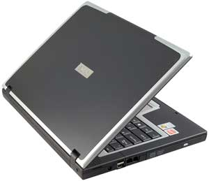
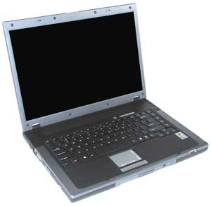
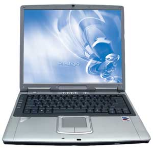
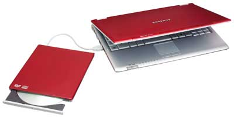
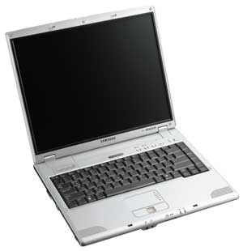

В этом номере журнала мы завершаем начатый в "BYTE/Россия" № 10'2005 и 1'2006 обзор мобильных ПК, вышедших на российский рынок в первой половине (с января по август включительно) 2005 г. Как и прежде, компании и их продукция расположены в алфавитном порядке, без учета объемов продаж, долей рынка и прочих экономических показателей, а основное внимание уделено чисто техническим вопросам и определению целевой аудитории для того или иного продукта. По мере возможности мы старались рассмотреть практически все объявленные модели, за исключением явно нацеленных на домашних пользователей.
Ноутбуки MSI
Модель Megabook M510A представляет собой универсальный портативный компьютер, в котором высокопроизводительная компонентная база сочетается с длительным временем работы от батарей. К целевой аудитории M510A можно отнести подавляющее большинство покупателей, заинтересованных в сбалансированном устройстве для замены настольного ПК по весьма приемлемой цене.
Компьютеры этой серии поставляются с процессорами Pentium M, работающими на частотах от 1,5 до 2,0 ГГц. Базой для них выступает набор микросхем Intel 855PM. Максимальный объем ОЗУ стандарта PC-2700 с помощью двух слотов расширения можно довести до 2 Гбайт. Графическая подсистема ноутбука, в зависимости от конкретного устройства, базируется на микросхеме ATI Mobility Radeon 9700 или 9600. В обоих случаях имеется 64 Мбайт независимой видеопамяти.
Устройства серии M510A оснащаются 15-дюйм дисплеями - либо SXGA+ с разрешением 1400х1050, либо XGA с разрешением 1024х768.
Дисковая подсистема включает один из следующих оптических приводов: комбинированный DVD/CD-RW или универсальный DVD±RW, а также жесткий диск емкостью 30, 40, 60 или 80 Гбайт.
Телекоммуникационные возможности представлены встроенным модемом стандарта V.90, интегрированным 100-Мбит/с Ethernet-адаптером и встроенным беспроводным интерфейсом Intel PRO/Wireless 2200BG. Для подключения дополнительного оборудования M510A снабжен интерфейсом, совместимым с картами стандарта CardBus типа II, параллельным портом, видеовыходом S-video, тремя разъемами USB 2.0 и разъемом IEEE 1394. Имеется также слот для карт флэш-памяти "4 в 1", совместимый со стандартами SecureDigital, MultiMediaCard, MemoryStick и SmartMedia.
Стандартный четырехячеистый аккумулятор обеспечивает пользователям более 3,5 ч непрерывной работы, в зависимости от комплектации ноутбука. Восьмиячеистая батарея повышенной емкости, поставляемая опционально, позволяет непрерывно работать до 7 ч.
Устройства серии M510A имеют следующие габариты: 329х280х21,3-32,9 мм и массу менее 2,9 кг.
Серия M510C практически полностью аналогична предыдущей, за исключением нового внешнего вида и небольших отличий в комплектации. Базовые компоненты ноутбуков этой серии, как и у M510A, таковы: НМС Intel 855PM, процессоры Pentium M с частотами от 1,5 до 1,8 ГГц, оперативная память стандарта PC-2700 (максимум 2 Гбайт), графический адаптер на основе ATI Mobility Radeon 9700 или 9600 с 64 Мбайт выделенной видеопамяти. Экраны с диагональю 15 дюймов - это либо SXGA с разрешением 1400х1050, либо XGA с разрешением 1024х768.
Дисковая подсистема состоит из оптического привода - универсального DVD±RW или комбинированного DVD/CD-RW, и жесткого диска емкостью 30, 40, 60, 80 или 120 Гбайт.
Все ноутбуки серии M510C оснащены модемом стандарта V.90, 100-Мбит/с Ethernet-адаптером и беспроводным интерфейсом Intel PRO/Wireless 2200BG. Для работы с дополнительным периферийным оборудованием в специальное гнездо устанавливаются платы расширения PC Card типа II; имеются также три разъема USB 2.0, параллельный порт, разъем IEEE 1394 и видеовыход S-video. Ноутбук оснащен разъемом "4 в 1" для флэш-памяти стандартов SecureDigital, MultiMediaCard, MemoryStick и SmartMedia.
Благодаря фирменной технологии Smart battery устройства серии M510C работают от стандартного (входящего в комплект поставки) аккумулятора до 7 ч. Габариты ноутбуков: 329х280х32,8-37,2 мм. Дорожная масса 2,9 кг.
Модель M635 представляет собой бескомпромиссное высокопроизводительное портативное решение на платформе AMD, предназначенное для полноценной замены настольного ПК в любых задачах - от типовых офисных приложений до работы с ресурсоемким мультимедиа-контентом.
|  | Ноутбук MSI Megabook M635.
|
В компьютерах этой серии в качестве базовых компонентов использован НМС ATI Radeon Xpress 200M (связка ATI RX480 и ATI SB400) и мобильные процессоры компании AMD. В них устанавливается один из следующих процессоров: AMD Turion 64 MT-30, MT-32, MT-34, MT-37, MT-40, MT-42 или MT-44 с тактовыми частотами от 1,6 до 2,4 ГГц. Максимальный объем ОЗУ стандарта PC-3200 DDR с помощью пары слотов расширения можно довести до 2 Гбайт. Графическая подсистема ноутбука основана на контроллере ATI Mobility Radeon X700 и дополнена, в зависимости от исполнения, 64 или 128 Мбайт независимой видеопамяти.
Ноутбуки серии оснащаются широкоформатными 15,4-дюйм WXGA-дисплеями с соотношением сторон 16:10 и разрешением 1280х800.
Дисковая подсистема включает жесткий диск емкостью от 40 до 120 Гбайт и на выбор один из оптических накопителей: комбинированный DVD/CD-RW, универсальный DVD±RW или универсальный DVD±RW с поддержкой двухслойных носителей.
Телекоммуникационные возможности M635 представлены встроенным модемом стандарта V.90, интегрированным Ethernet-адаптером со скоростью 10/100 Мбит/с, а в некоторых моделях и опциональным беспроводным интерфейсом Bluetooth. Для подключения периферии имеется гнездо PC Card типа II, четыре разъема USB 2.0, порт IEEE 1394 и видеовыход S-video. Кроме того, в устройстве предусмотрен встроенный считыватель карт флэш-памяти стандартов SecureDigital, MultiMediaCard, MemoryStick и MemoryStick Pro.
Восьмиячеистая аккумуляторная батарея, входящая в комплект поставки M635, обеспечивает примерно 2,5 ч непрерывной работы. Габариты модели составляют 355х255х30 мм, дорожная масса равна 2,8 кг.
Серия M645 в идеологическом плане есть зеркальное отражение M635, с той лишь разницей, что построена она на компонентной базе платформы Intel Centrino и графическом решении от компании Nvidia. Круг решаемых с ее помощью задач, а следовательно, и целевая аудитория - точно те же, что и у предыдущей серии.
|  | Ноутбук серии MSI Megabook M645.
|
Компьютеры этой серии построены на базе набора системных микросхем Intel 915PM Express и поставляются с 1,6-ГГц процессором Pentium M 725, 1,7-ГГц Pentium M 735 или 1,8-ГГц Pentium M 745 на выбор. В стандартный комплект поставки входит оперативная память стандарта PC2-3200 DDR2, максимальный объем которой посредством пары слотов можно довести до 2 Гбайт. Графическая подсистема базируется на микросхеме Nvidia GeForce Go 6600 и выделенной видеопамяти объемом 64 либо 128 Мбайт.
Устройства серии M645 оснащаются широкоформатными 15,4-дюйм WXGA-дисплеями с соотношением сторон 16:10 и разрешением 1280х800.
Дисковая подсистема включает один из следующих оптических приводов на выбор: универсальный DVD±RW, комбинированный DVD/CD-RW, универсальный DVD±RW с поддержкой двухслойных носителей, и жесткий диск объемом 40, 60, 80 или 120 Гбайт.
Телекоммуникационная подсистема M645 состоит из встроенного модема стандарта V.90, ИК-порта, интегрированного сетевого Ethernet-адаптера со скоростью 10/100 Мбит/с, а также беспроводного интерфейса Intel PRO/Wireless 2100BG. Периферийное оборудование можно подключать с помощью гнезда PC Card типа II, видеовыхода S-video, четырех разъемов USB 2.0 и порта IEEE 1394. Предусмотрен также интерфейс для карт флэш-памяти стандартов SecureDigital, MultiMediaCard, MemoryStick и MemoryStick Pro.
Стандартный восьмиэлементный аккумулятор обеспечивает ноутбуку до 3 ч непрерывной работы. Габариты M645 - 355х255х29,9 мм, масса 2,9 кг.
Модель Megabook S260 представляет собой портативное устройство, совмещающее компактные размеры и малую массу с полным набором компонентов, необходимых и достаточных большинству пользователей для повседневной работы.
В S260 может быть установлен один из следующих процессоров: 1,7-ГГц Pentium M 735, 1,6-ГГц Pentium M 725, 1,3-ГГц Celeron M 350, 1,5-ГГц Celeron M 340 или 1,4-ГГц Celeron M 330. В качестве базы выступает НМС Intel 915GM Express. В стандартной поставке устройства оснащены 256 или 512 Мбайт оперативной памяти PC2-4200 DDR2, расширяемой до 2 Гбайт. Видеоподсистема построена на базе интегрированного в набор микросхем графического ядра Intel Graphic Media Accelerator 900.
Устройства серии S260 оснащаются широкоформатными 12,1-дюйм WXGA-дисплеями с разрешением 1280х800.
Дисковая подсистема включает либо универсальный оптический привод DVD±RW, совместимый с двухслойными носителями, либо комбинированный DVD/CD-RW (по выбору покупателя). В ноутбуке установлен жесткий диск емкостью 40, 60 или 80 Гбайт.
Телекоммуникационная подсистема S260 состоит из встроенного модема стандарта V.90, Ethernet-адаптера со скоростью передачи данных 10/100 Мбит/с и беспроводного интерфейса для работы с сетями стандарта 802.11 b/g. В некоторых устройствах может быть установлен адаптер интерфейса Bluetooth. Три разъема USB 2.0, порт IEEE 1394 и гнездо для карт расширения стандарта PC Card типа II позволяют подключать к ноутбуку множество разнообразных периферийных устройств. В корпусе также имеется гнездо для карт флэш-памяти стандартов SecureDigital, MultiMediaCard, MemoryStick и MemoryStick Pro.
Мобильные компьютеры серии S260 могут оснащаться стандартной четырехэлементной батареей либо расширенной восьмиячеистой. Согласно данным производителя, максимальная продолжительность автономной работы S260 достигает 4 ч.
Ноутбуки этой серии имеют массу 1,8 кг при габаритах 303х225х26-28 мм.
Модель Megabook S270 аналогична S260 как по назначению, так и по внешнему виду, пожалуй, за одним лишь исключением, - S270 поставляется в корпусе только черного цвета. А вот внутреннее содержимое моделей различается кардинально - если S260 представляет собой вершину мобильности среди полнофункциональных сверхпортативных ПК на платформе корпорации Intel, то S270 - аналогичное достижение уже на платформе компании AMD.
Устройства S270 созданы на базе набора микросхем ATI Radeon Xpress 200M - связка ATI RX480M и ATI SB400. В зависимости от комплектации ноутбук может содержать либо процессор Athlon 64 2700+, 2800+ или 3000+ с тактовой частотой от 1,6 до 2,0 ГГц, либо Turion 64 моделей от MT-28 до MT-37 с тактовой частотой от 1,6 до 2,0 ГГц, либо Turion 64 моделей ML-28 - ML-40 с частотой от 1,6 до 2,2 ГГц. Оперативная память ноутбука расширяется с начальных 256 или 512 Мбайт до максимальных 2 Гбайт двумя модулями SO-DIMM стандарта PC-3200 DDR. В качестве графического адаптера используется встроенный в НМС видеоконтроллер ATI Radeon X300.
Ноутбуки оснащаются широкоформатными 12,1-дюйм WXGA-дисплеями с разрешением 1280х800.
Дисковая подсистема ноутбука включает оптический привод: либо комбинированный DVD/CD-RW, либо DVD±RW, совместимый с двухслойными носителями, а также жесткий диск емкостью 40, 60 или 80 Гбайт.
Для связи с внешним миром могут использоваться встроенный модем стандарта V.90, гигабитный сетевой адаптер NetXtreme Gigabit, ИК-порт и встроенный беспроводной интерфейс Intel PRO/Wireless 2200BG, а также опциональный интерфейс Bluetooth в некоторых устройствах. Для подключения периферийных устройств модель S270 имеет три разъема USB 2.0, порт IEEE 1394, гнездо для карт PC Card типа II и слот для карт флэш-памяти стандартов SecureDigital, MultiMediaCard и MemoryStick.
Устройства серии S270 комплектуются либо стандартной четырехэлементной батареей, либо восьмиячеистым аккумулятором повышенной емкости. По данным производителя, ноутбук способен проработать автономно около 3,5 ч.
Габариты S270 составляют 303х225х26-28 мм, масса - 1,9 кг.
Модели Prestigio
Серия Nobile 158W представляет собой полноценную замену настольных ПК, предоставляющую в распоряжение пользователей мощные вычислительные возможности и отличные средства визуализации.
Устройства Nobile 158W созданы на базе набора микросхем Intel 855PM и процессора Pentium M модели 745 с тактовой частотой 1,8 ГГц или 735 с частотой 1,7 ГГц. Оперативная память ноутбука расширяется со стандартных 512 Мбайт до 2 Гбайт двумя модулями SO-DIMM стандарта PC-2700 DDR. В качестве графического адаптера используется решение на базе микросхемы ATI Mobility Radeon 9700 со 128 Мбайт независимой видеопамяти.
Мобильные ПК Nobile 158W оснащаются широкоформатными 15,4-дюйм WUXGA-дисплеями с соотношением сторон 16:10 и с разрешением 1920х1200.
Дисковая подсистема ноутбука включает универсальный оптический привод DVD±RW, совместимый с двухслойными болванками, и жесткий диск емкостью 60 Гбайт со скоростью вращения 5400 об./мин.
В составе телекоммуникационной подсистемы - встроенный модем стандарта V.90, гигабитный сетевой адаптер Ethernet, ИК-порт, встроенный беспроводной интерфейс Intel PRO/Wireless 2200BG для работы с сетями IEEE 802.11b и g, а также беспроводной интерфейс Bluetooth. Для подключения периферийных устройств Nobile 158W имеет три разъема USB 2.0, видеовыход S-video, цифровой аудиовыход стандарта S/PDIF, последовательный порт, гнездо для карт PC Card типа II, а также гнездо для установки карт флэш-памяти типа SecureDigital, MultiMediaCard, MemoryStick и MemoryStick Pro.
Устройства серии Nobile 158W имеют габариты 295х273х36 мм и массу 3,15 кг (с установленным оптическим приводом).
Модели серии Nobile 1560 относятся к разряду универсальных рабочих систем, одинаково хорошо пригодных для решения офисных задач, Web-дизайна и программирования, работы с изображениями, беспроводного обмена данными, ведения бухгалтерии и многих других задач.
Основа ноутбуков - процессор Intel Pentium M 715 с тактовой частотой 1,73 ГГц, НМС Intel 915GM Express и оперативная память стандарта PC2-4300 DDR2, расширяемая с первоначально установленных 512 Мбайт до 2 Гбайт с помощью пары SO-DIMM разъемов. Видеоподсистема построена на базе графического ядра Intel Graphic Media Accelerator 900, интегрированного в НМС. Устройства серии Nobile 1560 оснащаются 15-дюйм XGA-дисплеями с разрешением 1024х768.
Дисковую подсистему ноутбука составляет комбинированный оптический привод DVD/CD-RW и 40-Гбайт жесткий диск со скоростью вращения 5400 об./мин, подключенный посредством интерфейса Serial ATA 150. Можно также подключить дисковод для работы с 3,5-дюйм дискетами, поставляемый опционально.
Телекоммуникационные возможности Nobile 1560 реализованы посредством встроенного модема стандарта V.90, гигабитного Ethernet-адаптера и беспроводного адаптера Intel PRO/Wireless 2915ABG для работы с сетями стандарта 802.11b/g и 802.11a. Периферийные интерфейсы представлены тремя портами USB 2.0, видеовыходом S-video, разъемом IEEE 1394, цифровым аудиовыходом стандарта S/PDIF и гнездом для карт PC Card типа II. Кроме того, имеется гнездо для установки карт флэш-памяти стандарта Secure Digital, MultiMediaCard и MemoryStick.
Ориентировочное среднее время автономной работы ноутбуков этой серии от штатного аккумулятора, по данным производителя, составляет около 4,5 ч.
Габариты модели Nobile 1560 - 327х320х24 мм, масса в полной дорожной комплектации равна 2,7 кг.
Серия Nobile 1570 - одно из наиболее производительных семейств в продуктовой линейке Prestigio. Ноутбуки с быстрым процессором и высокопроизводительной графической платой позволяют без проблем работать даже с профессиональными графическими приложениями и весьма ресурсоемкими трехмерными задачами.
|  | Ноутбук серии Prestigio Nobile 1570.
|
Компьютеры этой серии поставляются с процессором Pentium M модели 740, работающим на тактовой частоте 1,73 ГГц. В качестве компонентной базы выступает набор микросхем Intel 915PM Express. Начальный объем установленной в ПК оперативной памяти стандарта PC2-4300 DDR2 составляет 512 Мбайт; с помощью SO-DIMM слотов его можно довести до 2 Гбайт максимум. Графическая подсистема ноутбука построена на базе микросхемы Nvidia GeForce Go 6600 и 128 Мбайт выделенной видеопамяти.
Ноутбуки серии Nobile 1570 оснащаются широкоформатными 15-дюйм дисплеями SXGA+ с разрешением 1400х1050.
Дисковая подсистема портативного компьютера включает комбинированный оптический привод DVD/CD-RW и 60-Гбайт жесткий диск с интерфейсом Serial ATA 150 и со скоростью вращения 5400 об./мин. Кроме того, можно подключить к ноутбуку поставляемый опционально дисковод для работы с 3,5-дюйм дискетами.
Телекоммуникационная подсистема серии Nobile 1570 включает встроенный модем стандарта V.92, сетевой 10/100 Мбит/с Ethernet-адаптер и интерфейс Intel PRO/Wireless 2915ABG для работы с беспроводными сетями стандарта 802.11b/g и 802.11a. Для подключения периферийного оборудования аппарат снабжен интерфейсом PC Card типа II, совместимым с картами стандарта CardBus, портом IEEE 1394 и тремя разъемами USB 2.0, видеовыходом S-video и цифровым аудиовыходом S/PDIF.
Ресурс стандартной батареи, входящей в комплект поставки устройств серии Nobile 1570, составляет примерно 5,4 ч непрерывной работы.
Портативные компьютеры Nobile 1570 имеют следующие массогабаритные характеристики: размеры 330х270х40,5 мм, дорожная масса 2,8 кг.
В серию Visconte 125W входят сверхкомпактные аппараты на базе платформы Centrino, предназначенные для пользователей, часто и помногу работающих вне офиса, в разъездах, однако заинтересованных при этом в достаточно мощном и функциональном устройстве. Помимо компактности и малой дорожной массы ноутбуки Visconte 125W могут привлечь потенциальных покупателей еще и достаточно низкой для российского рынка ценой.
Модели серии Visconte 125W построены на базе набора микросхем Intel 855GME. В ноутбуках может быть установлен один из следующих процессоров: Pentium M 725 с тактовой частотой 1,6 ГГц или Celeron M 350 с частотой 1,3 ГГц. Объем оперативной памяти стандарта PC2700 DDR в типовых моделях, в зависимости от комплектации, начинается с 256 и 512 Мбайт и может быть расширен посредством установки дополнительных модулей в два SO-DIMM слота. Максимум ОЗУ ограничен стандартным для НМС объемом в 2 Гбайт. Графическая подсистема портативного компьютера базируется на интегрированном в набор микросхем графическом ядре Intel Extreme Graphics 2.
Устройства этой серии оснащаются широкоформатными 12,1-дюйм WXGA-дисплеями с соотношением сторон 16:10 и разрешением 1280х800.
Портативные компьютеры, относящиеся к серии Visconte 125W, штатно комплектуются комбинированным оптическим приводом DVD/CD-RW и жестким диском 60 Гбайт со скоростью вращения 5400 об./мин. Они оснащены модемом стандарта V.92, сетевым Ethernet-адаптером со скоростью передачи данных 10/100 Мбит/с, ИК-портом и беспроводным интерфейсом Intel PRO/Wireless 2100, совместимым со стандартом 802.11b. В некоторых моделях присутствует опциональный интерфейс Bluetooth.
Для работы с дополнительным периферийным оборудованием в специальные гнезда устанавливаются платы расширения PC Card типа II; имеются также два разъема USB 2.0, порт IEEE 1394, видеовыход S-video и цифровой аудиовыход стандарта S/PDIF. Кроме того, ноутбуки оборудованы слотом для карт флэш-памяти типа SecureDigital, MultiMediaCard, MemoryStick и MemoryStick Pro.
Стандартный аккумулятор, входящий в комплект поставки, обеспечивает ноутбукам до 3 ч автономии. Габариты моделей серии Visconte 125W составляют 295х235х26 мм, полная дорожная масса - 1,9 кг.
Ноутбуки Samsung
Серия портативных ПК Samsung P40 фактически представляет собой целый конгломерат достаточно разнообразных моделей, объединенных общей аппаратной платформой Intel Sonoma и единым позиционированием на корпоративный рынок. Высокопроизводительные компактные устройства претендуют на роль замены настольных ПК, успешно справляясь со всем спектром деловых и креативных задач. За счет гибкого подхода к подбору компонентной базы и, соответственно, формированию конечной цены ноутбуки серии P40 способны практически полностью охватить потребности среднестатистических потребителей из деловой сферы.
В зависимости от конкретной модели в качестве основы устройств серии P40 используется платформа с набором микросхем Intel 915PM Express или Intel 915GM Express и один из следующих процессоров Pentium M: модель 730, 740, 750, 760 или 770 с тактовыми частотами от 1,6 до 2,13 ГГц. Оперативная память стандарта PC2-3200 DDR2 расширяется посредством двух слотов с первоначально установленных 512 Мбайт до 2 Гбайт. В качестве графического адаптера применяется широкий диапазон решений: интегрированное в НМС графическое ядро Intel Graphic Media Accelerator 900, внешний модуль PCI Express, построенный на базе микросхемы ATI Mobility Radeon X300 и 64 Мбайт независимой видеопамяти, или модуль PCI Express на базе ATI Mobility Radeon X600 и 128 Мбайт выделенной видеопамяти.
Устройства серии P40 оснащаются 15,1-дюйм дисплеями: либо SXGA+ с разрешением 1400х1050, либо XGA с разрешением 1024х768.
Дисковая подсистема ноутбука, в зависимости от модели, включает один из оптических накопителей: комбинированный DVD/CD-RW, универсальный DVD±RW или универсальный DVD±RW с поддержкой двухслойных носителей, а также жесткий диск емкостью 40, 60 или 80 Гбайт.
Телекоммуникационная подсистема серии P40 состоит из модема стандарта V.92, ИК-порта, Ethernet-адаптера со скоростью передачи данных 10/100 Мбит/с или гигабитного Ethernet-адаптера (в зависимости от конкретного устройства), беспроводного интерфейса для работы в сетях стандарта 802.11b/g и, в некоторых моделях, интерфейса Bluetooth.
Периферийное оборудование подключается посредством плат расширения PC Card типа II, совместимых со стандартом CardBus, четырех разъемов USB 2.0, порта IEEE 1394, последовательного интерфейса, параллельного порта и видеовыхода S-video. Есть также специальный разъем для подключения опционального расширителя портов. Помимо этого, имеется гнездо для установки карт флэш-памяти стандарта SecureDigital, MultiMediaCard и MemoryStick.
В комплект поставки входит восьмисекционная аккумуляторная батарея, дающая до 6 ч непрерывной автономной работы при включенной системе энергосбережения.
Габариты устройств серии P40 составляют 323х270х29,5 мм, их масса равняется 2,7 кг.
Серия Q30 Plus представляет собой сверхкомпактное решение, обладающее весьма привлекательным сочетанием малых габаритов и производительной компонентной базы. Устройства серии Q30 Plus ориентированы на пользователей, большую часть времени работающих в подвижном режиме вне офиса, на тех, кто всегда в пути и не желает мириться ни с лишней тяжестью своего "компаньона", ни с его недостаточной вычислительной мощностью.
|  | Ноутбук серии Samsung Q30 Plus.
|
В качестве базовых компонентов ноутбуков этой серии использован НМС Intel 915GM Express и один из процессоров со сверхнизким энергопотреблением: либо 1,2-ГГц Pentium M 753, либо 1,1-ГГц Pentium M 733. В единственный SO-DIMM-слот по умолчанию установлено 512 Мбайт оперативной памяти стандарта PC2-3200 DDR2, а совокупный ее объем ограничен максимумом в 768 Мбайт. Графическая подсистема построена на базе ядра Intel Graphic Media Accelerator 900, интегрированного в НМС.
Устройства серии Q30 Plus имеют широкоформатный 12,1-дюйм WXGA-дисплей с разрешением 1280х768.
Дисковая подсистема состоит из подключаемого с помощью интерфейса IEEE 1394 внешнего оптического привода: либо универсального DVD±RW, либо комбинированного DVD/CD-RW, и жесткого диска емкостью 40 или 60 Гбайт.
Все аппараты серии Q30 Plus оснащены модемом стандарта V.90, 10/100-Мбит/с адаптером Ethernet, беспроводным интерфейсом для работы в сетях стандарта 802.11b/g и интерфейсом Bluetooth. Для работы с дополнительным периферийным оборудованием предназначены пара разъемов USB 2.0 и порт IEEE 1394. Кроме того, ноутбуки оснащены слотом для карт флэш-памяти стандартов SecureDigital, MultiMediaCard, MemoryStick и MemoryStick Pro, Compact Flash.
В комплект поставки устройств серии Q30 Plus входит трехэлементная аккумуляторная батарея, обеспечивающая примерно 2 ч автономной работы при включенной системе энергосбережения, и дополнительная шестиэлементная батарея повышенной емкости, позволяющая продлить время автономии до 6 ч при тех же условиях.
Габариты ноутбуков Q30 Plus составляют 287,7х197,5х23,8 мм, полная дорожная масса - 1,09 кг.
Серия X20 представляет собой типовое мобильное решение с производительностью, достаточной для полноценной замены настольных ПК, и вместе с тем сохранившее большинство привлекательных черт, свойственных портативным компьютерам.
Модели серии Samsung X20 построены на базе набора микросхем Intel 915PM Express либо 915GM Express. В качестве центрального процессора используются Pentium M моделей 730 (частота 1,6 ГГц), 740 (1,73 ГГц) и 750 (1,86 ГГц) или же Celeron M моделей 350 (частота 1,3 ГГц) и 360 (1,4 ГГц). Поддерживается оперативная память стандартов PC2-3200 DDR2 и PC2-4300 DDR2, при этом максимальный объем ОЗУ с первоначальных 512 Мбайт можно нарастить до 2 Гбайт посредством пары SO-DIMM-слотов. Графическая подсистема построена с использованием либо интегрированного в НМС графического ядра Intel Graphic Media Accelerator 900, либо модуля PCI Express на базе микросхемы ATI Mobility Radeon X600 и 64 Мбайт независимой видеопамяти.
Устройства серии X20 оснащаются стандартным 15-дюйм XGA-дисплеем с разрешением 1024х768.
В дисковую подсистему ноутбука входит либо универсальный оптический привод DVD±RW, либо комбинированный DVD/CD-RW привод, и жесткий диск емкостью 40, 60 или 80 Гбайт.
Телекоммуникационная подсистема серии X20 состоит из модема стандарта V.92, гигабитного Ethernet-адаптера, беспроводного интерфейса, совместимого со стандартом 802.11 b/g, и интерфейса Bluetooth. Для подключения периферийных устройств можно воспользоваться гнездом для плат расширения PC Card типа II, совместимых со стандартом CardBus, тремя разъемами USB 2.0, портом IEEE 1394 и цифровым оптическим S/PDIF-аудиовыходом. Предусмотрен и слот для карт флэш-памяти стандартов SecureDigital, MultiMediaCard, MemoryStick.
В комплект поставки устройств серии X20 входит шестиэлементная аккумуляторная батарея, обеспечивающая до 4,5 ч автономной работы.
Массогабаритные характеристики ноутбуков X20 таковы: размеры 329х274,5х31,3 мм, полная дорожная масса 2,4 кг.
Серия X25 - это фактически продолжение серии X20, вобравшее в себя все лучшее от предшественников и дополненное новейшими компонентными решениями в области графики и центральных процессоров.
|  | Ноутбук серии Samsung X25.
|
Модели серии X25 построены на базе набора микросхем Intel 915PM Express и центрального процессора Pentium M модели 760 с тактовой частотой 2 ГГц или модели 750 с частотой 1,86 ГГц. Так же, как и в X20, поддерживается оперативная память стандартов PC2-3200 DDR2 и PC2-4300 DDR2. Максимальный объем ОЗУ составляет 2 Гбайт, исходно устанавливается 512 Мбайт. Графическая подсистема включает модуль PCI Express на базе микросхемы ATI Mobility Radeon X600 и 128 Мбайт выделенной видеопамяти.
Устройства серии X25 оснащаются широкоформатными 15,1-дюйм дисплеями SXGA+ с разрешением 1400х1050.
Дисковая подсистема ноутбука включает в себя универсальный оптический привод DVD±RW и жесткий диск емкостью 80 Гбайт.
Телекоммуникационная подсистема серии X25 состоит из модема стандарта V.92, гигабитного Ethernet-адаптера, беспроводного интерфейса, совместимого со стандартом 802.11b/g, и интерфейса Bluetooth.
Для подключения периферийных устройств можно воспользоваться гнездом для плат расширения PC Card типа II, совместимых со стандартом CardBus, тремя разъемами USB 2.0, портом IEEE 1394, видеовыходом S-Video и цифровым оптическим S/PDIF-аудиовыходом. Кроме того, в корпусе имеется разъем для карт флэш-памяти стандартов SecureDigital, MultiMediaCard, MemoryStick.
Устройства серии X25 комплектуются шестиэлементной аккумуляторной батареей, обеспечивающей среднюю продолжительность автономной работы пользователя около 4,5 ч.
Массогабаритные характеристики ноутбуков X20 таковы: размеры 329,8х274,5х31,3 мм, полная дорожная масса 2,4 кг.
Серию X50 можно рассматривать как универсальное портативное решение для самого широкого круга задач, однако высокопроизводительная графика и мощный процессор весьма неплохо смотрятся в условиях интенсивной работы со сложными насыщенными мультимедиа-данными.
Сердцем серии X50 стал процессор Pentium M моделей 770 (тактовая частота 2,13 ГГц), 750 (1,86 ГГц), 740 (1,73 ГГц) и 730 (1,6 ГГц), а базой - НМС Intel 915PM Express. Модели этой серии оснащаются оперативной памятью стандарта PC2-3200 DDR2 объемом 512 Мбайт, при этом общий объем ОЗУ можно расширить до 2 Гбайт. Графическая подсистема ноутбука основана на внешнем модуле PCI Express, который, в зависимости от модели, использует либо микросхему ATI Mobility Radeon X600 и 64/128 Мбайт видеопамяти, либо ATI Mobility Radeon X700 и 128 Мбайт видеопамяти.
Устройства X50 оснащены широкоформатными 15,4-дюйм WXGA-дисплеями с разрешением 1280x800.
Дисковая подсистема X50 включает в себя жесткий диск емкостью 60 или 80 Гбайт и оптический накопитель: универсальный оптический привод DVD±RW или комбинированный DVD/CD-RW.
Телекоммуникационная подсистема представлена встроенным модемом стандарта V.92, гигабитным Ethernet-адаптером, беспроводным интерфейсом стандарта 802.11 b/g и интерфейсом Bluetooth. Для работы с периферией аппараты X50 снабжены гнездом для CardBus-плат расширения PC Card типа II, тремя разъемами USB 2.0, портом IEEE 1394, видеовыходом S-Video и цифровым оптическим S/PDIF-аудиовыходом. В корпусе также имеется разъем для карт флэш-памяти стандартов SecureDigital, MultiMediaCard, MemoryStick.
Продолжительность автономной работы X50 при использовании шестиячеистой батареи, входящей в комплект поставки, составляет около 4,5 ч.
Габариты устройства - 357х267х28,1 мм. Масса равна 2,41 кг.